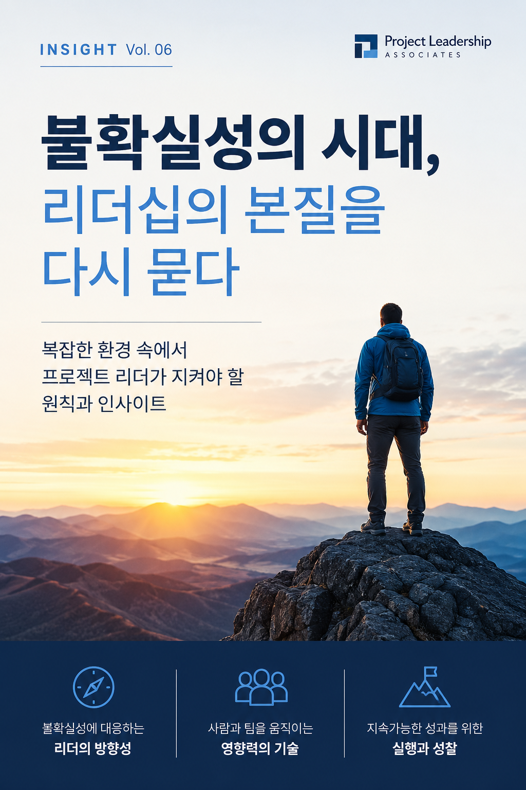

AI 시대의 리더십을 다시 읽다
기술이 답을 쏟아내는 시대,
리더의 질문은 무엇인가
Scharmer, Gregersen, McKinsey, Kahneman — 세계적 통찰을 리더의 언어로 정리한 큐레이션 에세이 시리즈입니다.

All Issues · 전체 10편
Vol. 10
신뢰의 화폐
AI가 그럴듯함을 흔하게 만들수록 조직의 진짜 화폐는 신뢰다 — 진정성·논리·공감으로 설계하는 자본.
Botsman · Frei · The Currency of Trust
Vol. 09
분별의 값
AI가 실행을 값싸게 만들수록 희소해지는 것 — 무엇을 할 가치가 있는지 가려내고 결과를 지는 판단.
MIT SMR · The Judgment Premium
Vol. 08
브레인 캐피탈
AI 시대의 병목은 기술이 아니라 사람의 두뇌다 — 브레인 파워 조직을 만드는 다섯 원칙.
McKinsey · Brain-Powered Organizations
Vol. 07
인간의 자리
AI가 유능해질수록 사람들은 '진짜 인간다움'을 더 소중히 여긴다 — Stanford가 발견한 'AI 효과'.
Benoît Monin · Stanford GSB
Vol. 06
사람에 대한 더 깊은 이해
AI가 합리적 계산을 대신하는 시대, 비합리적 인간을 이해하는 것이 리더의 마지막 경쟁력이다.
Daniel Kahneman · 행동경제학
Vol. 05
가치가 사는 곳
생산성 향상은 입장권일 뿐 — AI가 진짜 가치를 만드는 네 개의 구조적 지점.
McKinsey · Where AI Will Create Value
Vol. 04
결단력의 부재
AI가 지운 것은 정보가 아니라 변명이었다. 정보의 과잉이 드러낸 조직의 결단력 부재.
Entrepreneur · HBR · McKinsey
Vol. 03
질문의 주권
답이 아니라 질문의 문화로 — 가장 큰 질문을 가진 리더가 가장 큰 변화를 만든다.
Hal Gregersen · MIT
Vol. 02
리더십의 역설
가장 큰 강점이, 가장 큰 맹점이 되는 순간 — 강점이 만든 그림자.
Bansal · The Paradox
Vol. 01
AI 시대 리더십의 사각지대
지능을 계산으로만 정의할 때, 인간은 무엇을 잃어가고 있는가.
Otto Scharmer · MIT SMR